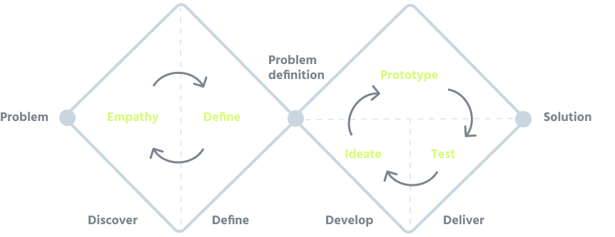

With my experience in banking I connect UX/UI design with business goals, while providing delightful client experiences based on user feedback, data and research. My work experience taught me that efforts are well spent when giving more time for user input at every step of the way.
User research, creating user personas, information architecture, userflows, wireframes and prototypes.
User research, creating user personas, information architecture, userflows, wireframes and prototypes.
User research, creating user personas, information architecture, userflows, wireframes and prototypes.
With my experience in banking I connect UX/UI design with business goals, while providing delightful client experiences based on user feedback, data and research. My work experience taught me that efforts are well spent when giving more time for user input at every step of the way.
Here are some of my latest case study that represent my process throught my projects.
Redesigning the website of ThinkSTEAM to promote better awareness and increase class registrations.
Full Case StudyCreating a mobile app focused on planning a trip with ease, specifically for parents traveling with kids
Full Case StudyCreating a mobile app for entrepreneur women who want to start their own business
Full Case Study